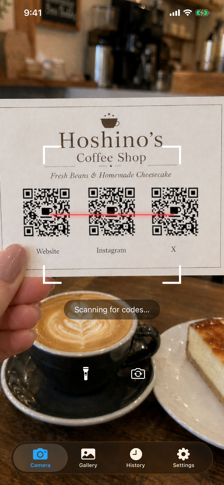
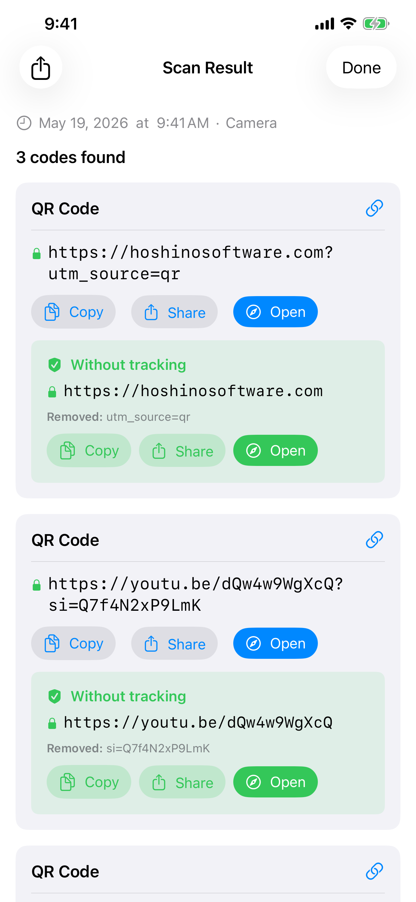
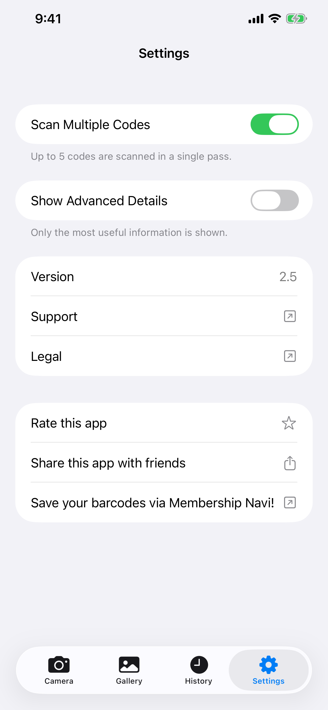
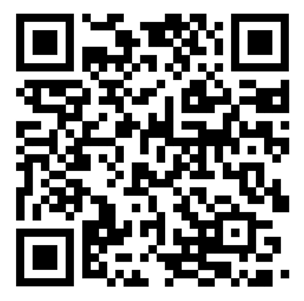
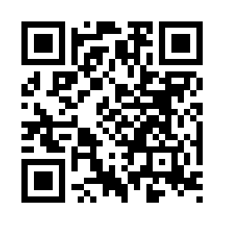
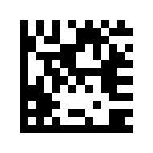
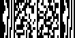
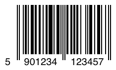
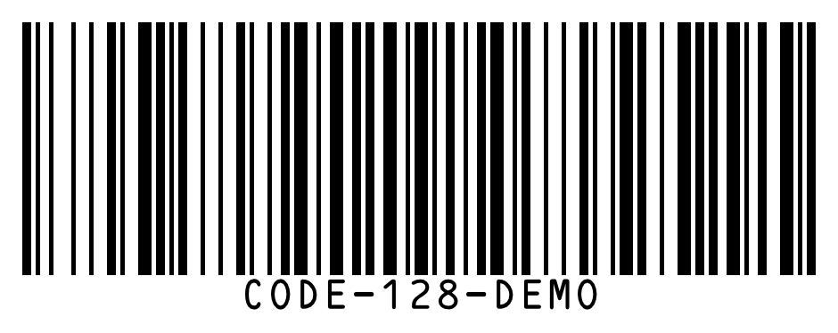

Barcode QR Reader
Barcode QR Reader scans barcodes and QR codes using your iPhone's camera or any image in your photo library. It works entirely offline, stores nothing in the cloud, and never shows ads.
Download

Barcode QR Reader is free to download from the App Store. No account required. Requires iOS 26 or later.
Support
Have a question, found a bug, or need help with the app? Reach out. We read every message.
Before you write
Many common issues are answered in the Manual and FAQ below. A few quick checks:
- Camera not working? Go to iPhone Settings → Privacy & Security → Camera → enable access for Barcode QR Reader.
- Can't find history? Tap the History tab. Entries are kept for 6 months and cap at 1,000.
- Code not scanning? Ensure good lighting and hold the code steady. Try Gallery mode if you have an image file.
- App crashing? Force-quit and reopen. If it persists, email us with your iPhone model and iOS version.
Frequently Asked Questions
- Does it need an internet connection?
No. Barcode QR Reader works completely offline. - Does it collect my data?
No. Nothing is uploaded anywhere. Scan history is stored only on your device. - Does it access my entire photo library?
No. In the Gallery tab, you pick a single photo using the system photo picker. Barcode QR Reader never receives access to your library. - Why does multi-code mode take a little longer?
The camera gathers codes across a short window of frames to make sure it catches all codes in view before showing the result. - How long is scan history kept?
Entries older than 6 months are removed automatically. The history also caps at 1,000 entries; the oldest are removed to make room for new ones. - Why doesn't it navigate to a link automatically?
This is intentional. Fake or malicious QR codes are common, found in parking lots, restaurant tables, and elsewhere. Showing you the URL before opening it lets you verify it's safe.
Manual



Camera
The Camera tab opens and starts scanning right away. Point your phone at any barcode or QR code and the app detects it automatically. Camera permission is required. If you haven't granted it yet, a prompt will appear. Tap Open Settings and enable Camera access for Barcode QR Reader.
- Flashlight: tap the flashlight button to illuminate dark environments. Only available with the back camera.
- Front camera: tap the rotate button to switch between back and front cameras. Handy when the back camera is not available (e.g. damaged).
Gallery
The Gallery tab lets you scan codes from an existing image. Tap Choose Photo to pick any image from your library. Only the specific photo you choose is shared with the app. Barcode QR Reader does not request access to your entire photo library.
After picking a photo, the app scans it and shows the result immediately. If no code is found, an alert will tell you so.
History
Every scan is automatically saved to the History tab. Scans are kept for 6 months and the history holds up to 1,000 entries; the oldest are removed automatically when the limit is reached.
- View a past scan: tap any row to re-open the full result.
- Delete one entry: swipe left on a row and tap Delete.
- Delete all: tap the trash icon in the top-right corner.
- Source label: each entry shows whether it came from the Camera, Gallery, or a Share.
Settings
Multi-Code Mode
By default, Barcode QR Reader stops as soon as it finds one code. Turn on Multi-Code Mode to scan up to 5 codes at once, useful for business cards, product sheets, or any image containing several codes side by side.
When multi-code mode is active, the camera keeps scanning for a brief moment after the first detection to gather all visible codes before showing results. This is why it takes slightly longer than single-code mode.
Show Advanced Details
Turn on Show Advanced Details to reveal technical metadata alongside each scan result: things like QR version, error correction level, mask pattern, or barcode structure (start/stop characters, check digit). This is shown on the Scan Result page and in the History tab rows.
Scan Results
When a code is detected, Barcode QR Reader shows you its content before doing anything with it. You always see the raw data first, along with Copy and Share buttons. If the code contains a URL (common in QR codes), an Open button appears. Tapping it opens the link in your default browser, not an in-app browser. No browsing data is collected.
Barcode QR Reader automatically recognizes special code types and shows contextual actions:
| Code type | What you can do |
|---|---|
| 🌐 URL / Link | Open in your default browser · Copy · Share |
| 📶 Wi-Fi network | Connect directly · Copy password |
| 👤 Contact (vCard / MECARD) | Save to Contacts with preview |
| 📅 Calendar event | Add to Calendar |
| Compose pre-filled email | |
| 💬 SMS / Message | Send Message |
| 📞 Phone number | Call |
| 📍 Location / Geo | Open in Maps |
| 📹 FaceTime | FaceTime or FaceTime Audio |
| ₿ Bitcoin | Copy address |
| ✈️ Boarding pass | Flight details parsed from Aztec / PDF417 |
With Show Advanced Details turned on (in Settings), two additional sections appear on the result page:
- Decoded Data: the raw string encoded inside the barcode, before any parsing.
- Structure: technical breakdown of the barcode: start/stop characters, check digit, guard patterns, and similar elements depending on the code type.
For QR codes, metadata chips also appear showing version number, error correction level, and mask pattern.
Tracking parameter detection
When a URL contains tracking parameters, Barcode QR Reader shows an Open Without Tracking button. This includes UTM tags, click IDs from Facebook, Google Ads, Microsoft, TikTok, and others. Tap it to open the link with those parameters removed. You reach the same page without being tracked.
Scanning from Another App
You can scan a code that appears in a photo inside any other app (a message, email, document viewer, or web browser) without leaving that app.
Using Share:
- Open the image in your gallery or any app, then tap the Share button.
- In the list of apps that appears, find and tap Barcode QR Reader. If you don't see it, scroll to the end of the list and tap More.
- The app opens and scans the image automatically.
Using Actions:
- Open the image in your gallery or any app, then tap the Share button.
- Scroll the actions row below the app list and tap Scan for Codes.
- The app opens and scans the image automatically.
Homescreen Widget
You can add a widget to your homescreen as a larger shortcut to the app. Tapping it opens the camera directly, ready to scan. Widgets come in three sizes (small, medium, large), so you can choose whichever fits your homescreen layout.
- Long-press an empty area of your homescreen until the icons jiggle.
- Tap the + button in the top-left corner.
- Search for Barcode QR Reader.
- Choose a size and tap Add Widget.
- You can resize it later by long-pressing the widget and choosing Edit Widget.
Control Center
Control Center is the panel that slides down when you swipe down from the top-right corner of the screen. You can add a Barcode QR Reader button there to launch the camera with a single tap from anywhere, including the lock screen or while using another app.
- Swipe down from the top-right corner to open Control Center.
- Tap the + button to enter edit mode.
- Find Barcode QR Reader in the list and tap it to add.
- You can drag it to reposition it and resize it while in edit mode.
Supported Code Types
| Code | Notes |
|---|---|
| QR Code | Most common 2D code. Used for URLs, Wi-Fi, contacts, and more |
| Micro QR | Compact variant of QR Code for small labels with limited space |
| Aztec | Used on boarding passes and transit tickets |
| Data Matrix | Common in manufacturing, healthcare, and logistics |
| PDF417 | Used on driver's licenses, boarding passes, and shipping labels |
| Micro PDF417 | Compact PDF417 for small items like pharmaceutical packaging |
| EAN-8 | Short retail barcode for small products |
| EAN-13 | Standard retail barcode found on most consumer products worldwide |
| UPC-E | Compact barcode used on small US/Canada retail packaging |
| Code 39 | One of the oldest barcodes, common in industrial settings |
| Code 93 | Higher-density successor to Code 39 |
| Code 128 | High-density barcode widely used in logistics and shipping |
| ITF-14 | 14-digit barcode printed on corrugated cardboard shipping boxes |
| Codabar | Used in libraries, blood banks, and some shipping companies |
| GS1 DataBar | Compact retail barcode for small items like produce and fresh foods |
| GS1 DataBar Expanded | Extended variant that carries additional data like weight and expiry date |
Not supported:
| Code | Notes |
|---|---|
| EAN-2 / EAN-5 (add-ons) | Short digit supplements attached to EAN-13, used for magazine issue numbers and book pricing |
| rMQR | Rectangular Micro QR, a newer compact QR variant designed for narrow labels |
| MaxiCode | 2D dot-matrix code used by UPS on shipping labels |
| SP Code | Japanese accessibility barcode that encodes spoken audio data |
| Postal Codes | 4-state postal barcodes used by national mail services (USPS Intelligent Mail, Royal Mail, Australia Post, Japan Post, and others) |
| Proprietary app codes | Custom visual codes that only the issuing app can scan |
Demo Codes
Scan these directly from this screen with the camera, or take a screenshot and use the Gallery tab.
 | QR Code URL with tracking parameters https://hoshinosoftware.com?utm_source=review&utm_campaign=demo |
 | QR Code Wi-Fi network WIFI:S:example-wifi;T:WPA;P:example-password;; |
 | QR Code Email mailto:test@example.com |
 | QR Code Contact (vCard) BEGIN:VCARD VERSION:3.0 N:Last;First FN:First Last ORG:Company TITLE:Job Title ADR:;;Street;City;CA;90401;USA TEL;WORK;VOICE: TEL;CELL:+1234567890123 TEL;FAX: EMAIL;WORK;INTERNET:example@example.com URL:https://example.com END:VCARD |
Micro QR Compact QR for small labels HELLO | |
 | Aztec (Full) Transit / boarding passes AZTEC-DEMO-CODE |
 | Aztec (Compact) Compact variant for small labels AZTEC-DEMO-CODE |
 | Data Matrix (Square) Manufacturing / healthcare DATAMATRIX |
 | Data Matrix (Rectangular) Rectangular variant for narrow labels DATAMATRIX |
 | PDF417 ID documents / shipping labels PDF417 SAMPLE DATA |
 | Micro PDF417 Compact PDF417 for small items MICROPDF417 SAMPLE DATA |
 | EAN-13 Retail product barcode 5901234123457 |
 | UPC-E Compact retail barcode (US/Canada) 01234565 |
 | Code 128 Logistics / shipping CODE-128-DEMO |
 | ITF-14 Shipping box barcode 12345678901231 |
 | GS1 DataBar Compact retail barcode for small items 0112345678901231 |
Legal
Privacy Policy
Last Updated: April 2026
Introduction
Barcode QR Reader is built around a simple principle: your data belongs to you. This Privacy Policy explains what information the app accesses and how it is handled.
Camera Access
The app uses your device's camera to scan barcodes and QR codes in real time. The camera feed is processed entirely on your device. No images or video frames are ever stored, uploaded, or shared with anyone.
Scan History
Scan results are saved locally on your device using Apple's on-device storage. This data never leaves your device and is never transmitted to any server. You can delete your scan history at any time from within the app.
No Internet Connection
Barcode QR Reader works entirely offline. The app makes no network requests. Your data never leaves your device.
No Data Collection
We do not collect, store, or process any personal information. The app does not require an account or any form of registration.
Third-Party Services
Barcode QR Reader does not use any third-party analytics, advertising, or tracking services. No data is shared with any third party.
Children's Privacy
Because no personal data is collected, Barcode QR Reader is safe for users of all ages and complies with the Children's Online Privacy Protection Act (COPPA) and similar regulations worldwide.
Changes to This Policy
We may update this Privacy Policy from time to time. Changes are effective immediately upon posting. We encourage you to review this page periodically.
Contact Us
If you have any questions about this Privacy Policy, contact us at: support [at] hoshinosoftware [dot] com
Terms of Service
Last Updated: April 2026
Acceptance of Terms
By downloading or using Barcode QR Reader, you agree to be bound by these Terms of Service. If you do not agree, please do not use the app.
License
Hoshino Software grants you a personal, non-transferable, non-exclusive license to use Barcode QR Reader on your Apple devices in accordance with these terms and Apple's App Store Terms of Service.
Permitted Use
You may use Barcode QR Reader only for lawful purposes. You agree not to use the app in any way that violates applicable laws or regulations.
No Warranty
Barcode QR Reader is provided "as is" without warranty of any kind, express or implied. We do not guarantee that the app will be error-free, uninterrupted, or suitable for any particular purpose.
Limitation of Liability
To the fullest extent permitted by applicable law, Hoshino Software shall not be liable for any direct, indirect, incidental, special, or consequential damages arising from your use of or inability to use Barcode QR Reader.
Changes to These Terms
We may update these Terms of Service from time to time. Continued use of the app after changes are posted constitutes your acceptance of the revised terms.
Governing Law
These terms are governed by the laws of the jurisdiction in which Hoshino Software operates.
Contact Us
If you have any questions about these Terms of Service, contact us at: support [at] hoshinosoftware [dot] com